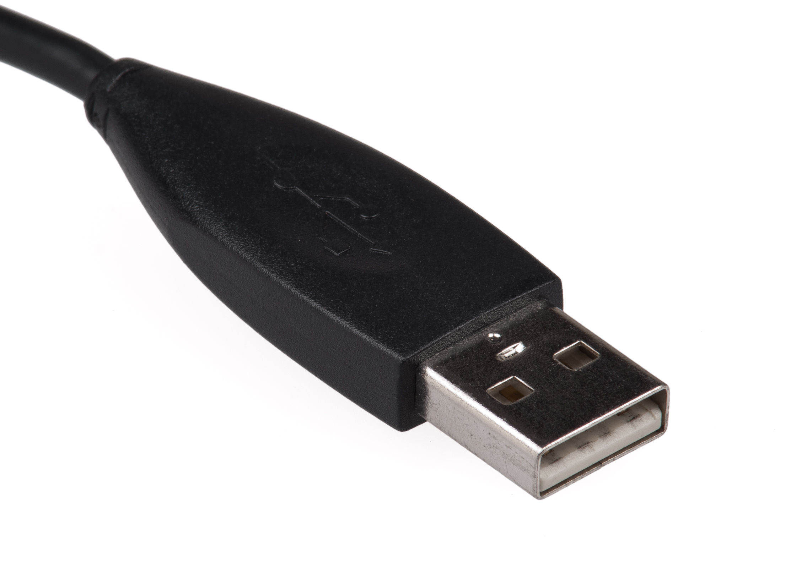
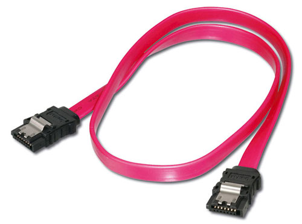
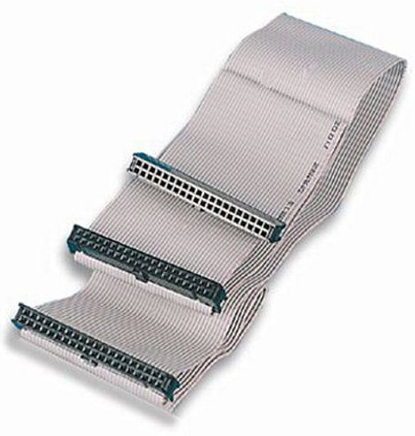

CAVI E PORTE
Le varie periferiche sono collegate tra loro tramite dei cavi. I cavi una volta era PATA (c'erano più fili che portavano più bit in parallelo), mentre oggi sono tutti SATA (solo un filo che porta solo 1 bit alla volta). Anche se può sembrare un passo indietro, il cambio è avvenuto perché in parallelo i cavi causavano interferenza magnetica e si perdevano dati, mentre in serie lo scambio è più sicuro.
Un cavo SATA connette direttamente Periferica-Scheda madre quindi lo scambio è molto veloce (1 Gigabit/s). Se la connessione con la periferica non è sicura (quando ad esempio il cavo è troppo lungo), la velocità viene abbassata (100 Megabit/s, 10 Megabit/s ...)
L'USB (Universal Serial Bus) è uno standard per collegare periferiche al computer. È nato dall'accordo tra IBM, Microsoft e Intel con l'intento di creare un nuovo standard per lo scambio di informazioni. Può collegare un massimo di 127 periferiche e la lunghezza massima di un cavo prima che il segnale si indebolisca è 5 metri. Lo standard nacque per le stampanti, poi con l'uscita dell'USB 1.0 la velocità era 1,5 Mbit/s, quindi adatta solo per dispositivi lenti come Mouse e Tastiera. Oggi la velocità è circa 4,8-10 GBit/s e connette di tutto, anche Hard Disk o Solid State Disk. Lo standard USB ha inoltre un cavo di alimentazione chiamato VBUS, ma può alimentare solo periferiche a basso consumo perché non è presente lo standard di disconnessione in caso di sovraccarico.
